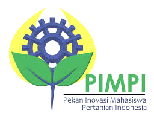

Supported byMedia PartnerSponsored by | Ada Apa di Seminar PIMPI ?
Yuk hadir dalam PIMPI (Pekan Inovasi Mahasiswa Pertanian Indonesia) 2014. Salah satu event pertanian terbesar dan berskala nasional yang diadakan di IPB.
Acara yang mengangkat tema "Gerakan Inovator Muda Inspirasi Pertanian Indonesia". Untuk sesi awal Seminar mengangkat tema "Cakrawala Pertanian Bagi Masa Depan Pemuda Indonesia" ini menghadirkan berbagai pembicara-pembicara sukses dan inspiratif di dunia pertanian diantaranya:
dan dimoderatori oleh:
Untuk sesi berikutnya dengan tema "Inspirasi Pemuda dalam Inovasi Pertanian Indonesia" menghadirkan:
dan dimoderatori oleh:
Selain itu, ada doorprize menarik, dan juga guest starnya juga dari civitas band, dan Gentra Kaheman.
Lokasi seminar berada di Gedung Andi Hakim Nasution (AHN) Kampus IPB Dramaga, Bogor tanggal : 8 November 2014 jam 07.30-selesai.
Untuk proses pendaftarannya, bisa mengirimkan persyaratan administrasi berikut: Seluruh persyaratan di atas sudah diterima oleh panitia PIMPI paling lambat tanggal 6 November 2014. Peserta akan mendapatkan tiket via email jika telah melengkapi persyaratan tersebut. Untuk informasi lebih lanjut dapat menghubungi Panitia PIMPI : 085716288280 |
 | |
 Kabinet Kupu-kupu Kabinet Kupu-kupu |
 |